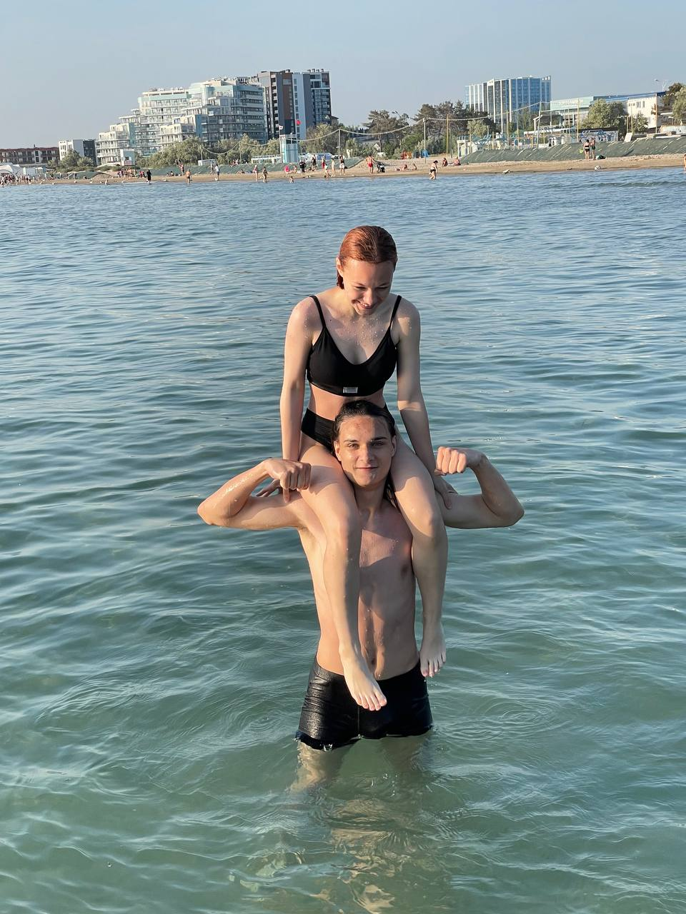
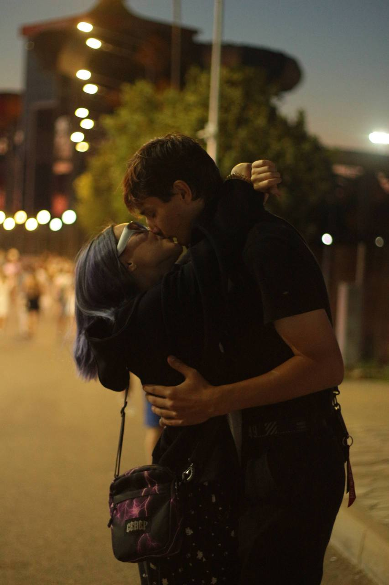

Сиськи.
Всё началось с места, которое никто кроме нас не назвал бы так. Там мы впервые увидели друг друга — ещё не зная, сколько всего будет после.
Иногда самое важное место на карте звучит немного смешно.

без ретуши
Не идеальная. Не ровная. Но наша. И поэтому — настоящая.
Всё началось с места, которое никто кроме нас не назвал бы так. Там мы впервые увидели друг друга — ещё не зная, сколько всего будет после.
Иногда самое важное место на карте звучит немного смешно.

Город ещё спал. А мне уже было хорошо просто потому, что рядом была ты. За день до того, как мы стали встречаться.
Одна прогулка, которую хочется помнить всегда.
Ты чаще делала первый шаг. Я спровоцировал первый поцелуй. И между нами случилось то самое хорошее безумие, которое не надо объяснять.
Не тихо. Зато очень по-настоящему.
Мы расстались и долго жили каждый своей жизнью. Не буду придумывать для этого лишних слов. Иногда история не заканчивается тогда, когда кажется, что закончилась.
Между нами было расстояние. Но не точка.
То же место. Только мы уже знали, что значит потерять друг друга. Тогда мы только начинали. Теперь — снова встретились.
Будто город тихо вернул нас туда, где всё началось.
Через несколько дней после той встречи ты лайкнула меня. Иногда судьба действительно выглядит как самый обычный лайк.
А потом — сообщения. И разговоры, которым не хотелось заканчиваться.
Не одним красивым кадром. Постепенно: прогулками, домашними свиданиями, привычкой быть рядом и говорить обо всём.
Ёжик, фонарики, друзья. И ты: «Вы чо, демона вызываете? Я пришла!»
И ещё море. И мазут, в который я умудрился вляпаться. И наш столик — просто столик, а сколько в нём нас.

Мы не делаем вид, что ничего не было. Было. И именно поэтому наше «сейчас» имеет такой вес.
Я выбрал тебя тогда.
Я выбираю тебя сейчас.
Твой голос. Смех. Немного дурные милые глаза. Твоё ребячество. Боевой характер, который каким-то чудом живёт рядом с такой нежностью. И то, как ты встаёшь на носочки, когда обнимаешь меня.
Когда-то я подсадил тебя на Лололошку. А потом сам незаметно подсел на тебя.
Две кружки на кухне. Котёнок, который носится по дому. Дождь за окном. Любимые машины. Может, однажды Япония. Мальчик и девочка. Не только красивые моменты — я хочу обычные дни с тобой.
И пусть где-то рядом однажды припаркуется наш Hellcat.
самое важное
Я выбрал тебя тогда. Я выбираю тебя сейчас. И я хочу выбирать тебя всю жизнь.